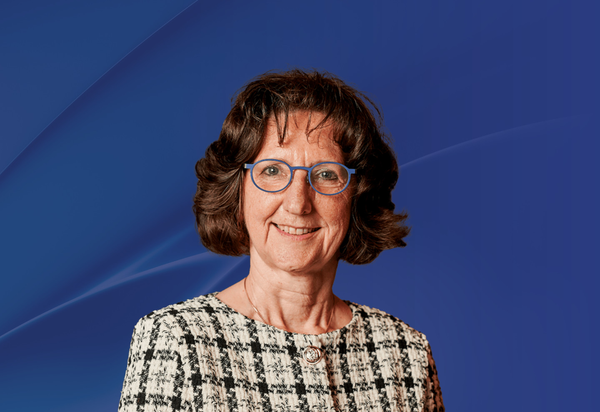

成員
康妮・艾爾茨教授
比利時
魯汶天主教大學
天文學研究所教授
魯汶天主教大學
天文學研究所教授

過往任期：
2027 年
康妮・艾爾茨教授於1988年在比利時安特衛普大學數學系畢業，並於1993年在比利時魯汶天主教大學取得天體物理學博士學位。其後，她以法蘭德斯研究基金會獨立博士後研究員身份多次赴海外進行研究。之後於2001年加入魯汶天主教大學，先後擔任講師(2001 ̶ 2004)、副教授(2004 ̶ 2007)及教授(2007 ̶ )。自2004年起，她還兼任荷蘭奈梅亨拉德堡德大學星震學講座教授，並於2021年獲得丹麥奧胡斯大學頒授自然科學榮譽博士學位。此外，艾爾茨教授曾獲得多項國內外大獎，包括2012年法朗基獎、2020年法蘭德斯研究基金會五年卓越獎、2022年科維理天體物理學獎，以及2024年克拉福德天文學獎。
她的研究主要集中於恒星結構和演化以及變星。她是星震學領域的先驅之一，通過研究恒星振盪來探索恒星內部結構。
(註：所有中文譯本，皆以英文本為準)